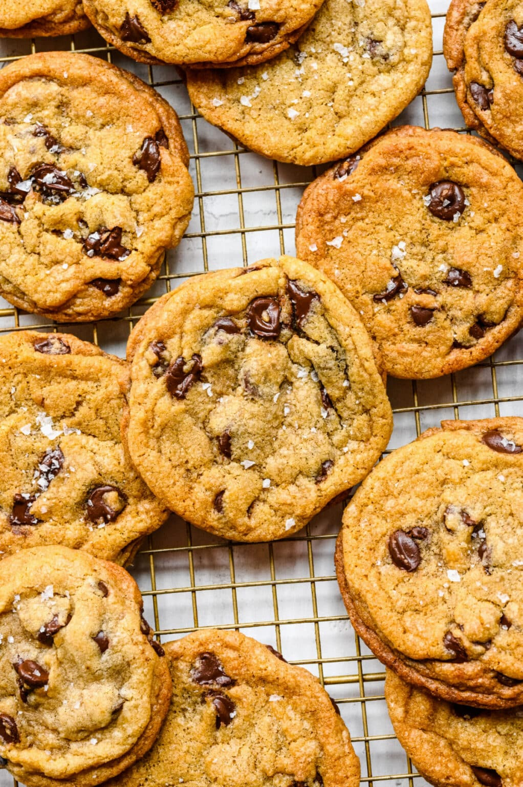

Home
Chocolate Chip Cookie Recipe
Original Recipe

Description
"This chocolate chip cookie recipe is made with only brown sugar and makes cookies that are the perfect blend of soft and chewy!"
Ingredients
- Butter
- Brown Sugar
- Flour
- Chocolate
Steps
- "Melt butter in a heavy saucepan. or in a microwave-safe bowl. The butter should be just melted."
- "Add brown sugar to a large bowl."
- "Stir to combine butter and sugar. Let stand 5 minutes."
- "Add egg and egg yolk; stir to combine. Stir in vanilla extract."
- "Add flour, baking soda, and salt. Stir in dry ingredients until just combined."
- "Stir in chocolate chips or chunks."
- "Using a medium cookie scoop (1.5 tablespoon), drop scoops of dough 2 inches apart on prepared cookie sheet."
- "Bake for about 7-10 minutes, or until the edges of the cookies are golden brown. The centers should still look soft and slightly underbaked. That will help to keep the cookies soft."
- "Let cool on cookie sheet for 5 minutes. Remove to wire rack to finish cooling."